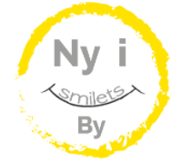

Case 1.2: Online magasin
Ny i smilets by
Gå til Ny i smilets by
Refleksion
Case 1.2 var den anden af de 3 store cases, men også den første case som foregik som et individuelt projekt. Opgave i forbindelse med case 1.2 lød på, at vi skulle skabe et online magasin, som henvender sig til unge studerende. Case 1.2 er i forhold til case 1.1 lagt på et langt højere niveau, især fordi vi på dette tidspunkt har mere dybdegående viden omkring forskellige fremgangsmetoder i de forskellige fag. Det ses blandt andet i, at vi i denne case ikke blot skulle udvikle en hjemmeside, men også fremstille en synopsis, som går i dybden med de fremgangsmetoder, samt de tanker der gjort omkring de forskellige valg der blev truffet under arbejdet.
Design Case 1.2
Andet projekt gik ud på at skabe et online magasin til en bestemt målgruppe. I dette projekt skulle vi dog være alene om opgaven. Jeg valgte at lave en side dedikeret til: nye studerende i Århus. Dette på baggrund af, at jeg selv var ny i Århus, og dermed havde en unik indsigt i målgruppen, så jeg bedst muligt kunne skabe relevant content. Jeg valgte at kreere tre artikler, der matchede de behov, jeg havde som tilflytter – og alt sammen med særligt fokus på min målgruppe.
Jeg er rigtig glad for fagene kommunikation og design, og var derfor spændt på at bruge disse to fag mere i denne case. I denne case fik vi lov til at bruge kommunikationsfaget særligt meget, da en del af fokusset i opgaven lå på at skabe oplysende og kreativt content, altså artikler. Jeg har ofte tænkt på, at jeg gerne vil arbejde som art director for et magasin såsom ELLE, Costume eller lignende, når jeg engang er færdig med at uddanne mig – og dette blev jeg bekræftet i, da jeg fik lov til at lege med at opsætte et online magasin. Desværre blev det visuelle designunivers, jeg havde tiltænkt mit online magasin, langt fra virkelighed, da mine kodningsevner endnu ikke er dertil.
Det lærte jeg i denne case
- At kode en hjemmeside helt fra bunden – alene. Én ting er at kode en hjemmeside som gruppe, for her kan arbejdsopgaverne nemt fordeles alt efter folks evner og talenter. I denne case stod jeg for at kreere alt selv, og det havde sine udfordringer, da min stærke side absolut ikke er kodning. Heldigvis er jeg landet i en dejlig klasse, hvor alle er super hjælpsomme. Det mærkede jeg særligt i perioden, da jeg skulle kode. Intet gik min vej, og jeg var tæt på ikke at kunne nå at aflevere til fristen – men der stod mine klassekammerater klar til at hjælpe, og jeg fik afleveret!
- Linke til relevante og brugbare hjemmesider i mine artikler, for at skabe et bredere og bedre content til brugerne.
- At når ovenstående skal gøres, skal linket gerne åbnes på en ny fane, så brugerne ikke bliver navigeret væk fra ens egen side. Her tillærte jeg mig kodningen bag dette, så det kunne blive muligt.
Design
I og med vi skulle skabe et visuelt design, kom jeg i dette projekt omkring mange nye designelementer. Jeg lærte vigtigheden af at argumentere for mine designvalg, da der bag hver beslutning, lå mange spekulationer og hensynstagen til den bestemte målgruppe. Jeg lærte, at vælge den rette typografi, da det her var vigtigt, at typografien i artiklerne var med serif, da det er mere læsevenligt. Desuden lærte jeg at tilpasse mine illustrationer og fotografier til budskabet. Dette ses især i mine billeder til artiklerne, hvor jeg selv har taget billeder og redigeret dem, så de understøttede indholdet bedst muligt.
Kommunikation
For at kreere det mest optimale content til min mit site, benyttede jeg mig af http://sprogvaskeriet.dk/test/tjek-din-lix/, som er en side, der udregner sværhedsgraden af dine tekster. Det er smart, da for tunge tekster måske vil forhindre nogle brugere i at læse contentet færdigt. Rammer man en lix, der passer til den pågældende målgruppe, gør det læsningen meget sjovere og bedre for brugerne. Mine artikler lå på middel, som passer perfekt til dagblade og tidsskrifter – ligesom mit site er.
Virksomhed
Jeg lærte her at bruge Trello til at danne mig overblik over et større projekt bestående af mange dele, inden der startes på noget som helst andet.
Interaktion
I denne case lærte jeg klart mest i interaktionsdelen, eftersom jeg stod med hele hjemmesiden selv. Jeg lærte bl.a. at lave kolonner i mine artikler ved hjælp af CSS. Desuden lærte jeg at lave hyperlinks, så man kan skrive en helt almindelig tekst såsom ”Klik her”, og klikker man så på dette, kommer man ind på en hjemmeside efter eget valg. Jeg fandt også ud af, at man kunne hente typografier fra Google Fonts, hvilket virkelig gav hjemmesiden et personligt præg, og jeg lærte også vigtigheden af SEO, så hjemmesiden bliver mest mulig synlig på de rigtige kanaler.